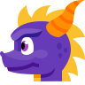
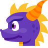

Qui suis-je ?

- Nom :CHENOT
- Prénom :Guillaume
- Age :23 ans
- Localisation : Érize-la-Brûlée (Meuse)
- Langue : Français, Anglais, Espagnol
- Lieu de vacance : Japon
- Série préférée : Malcolm
- Site internet préféré :Twitch
- Pointure : 42
- Animal préféré : Les Chats
- Langage préféré : en recherche
-
Mon crédo : "Moins tu dors plus t'es fort"

 
